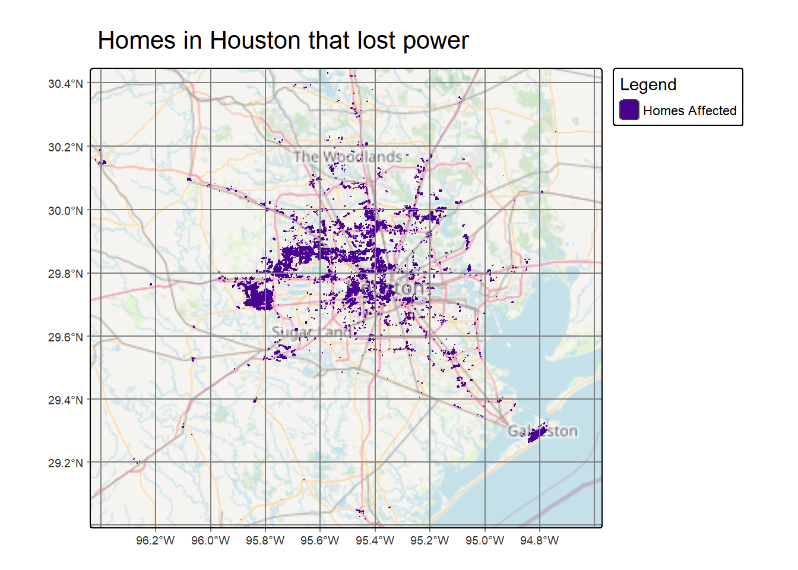
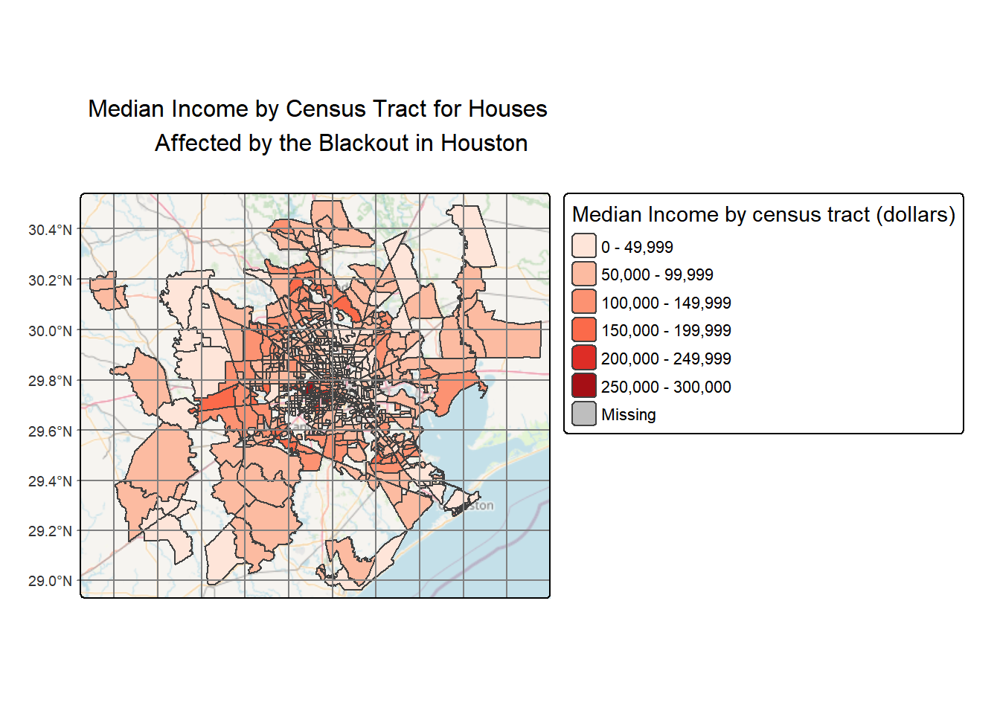
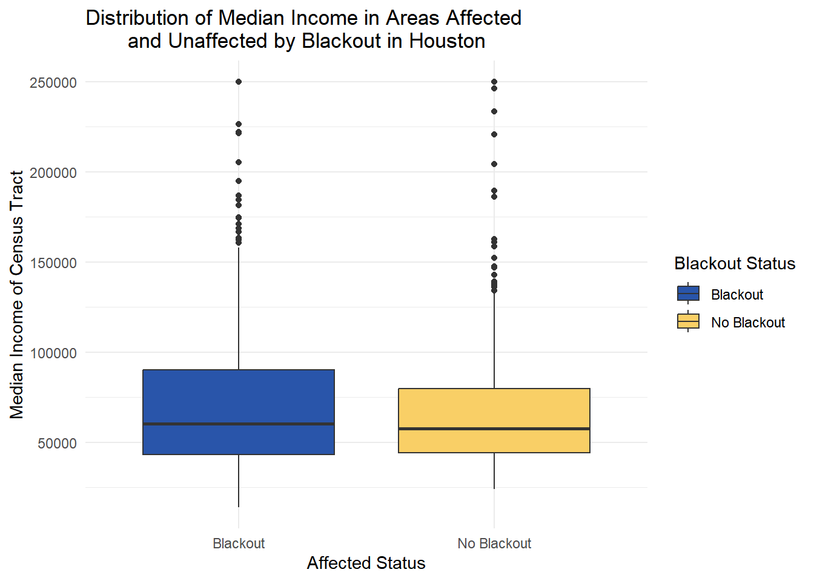

To what extent did the February 2021 Texas winter storm blackouts disproportionately affect low-income communities in the Houston metropolitan area?
Background
Climate change is increasing the frequency and intensity of extreme weather events, with devastating impacts on infrastructure and communities. In February 2021, Texas experienced a major power crisis resulting from three severe winter storms that swept across the United States between February 10-20, leaving millions without power for days in freezing temperatures1. The storm brought record-breaking cold and extreme weather conditions that overwhelmed the state’s power infrastructure. As temperatures decreased, demand for electricity surged while nearly half the grid’s generating capacity failed 2.
In this blog post, I identify the impacts of this series of extreme winter storms by estimating the number of homes in the Houston metropolitan area that lost power and investigate whether these impacts were disproportionately felt by low-income populations. Understanding where and who the blackout affected is important to determine infrastructure vulnerabilities and environmental justice concerns for future extreme weather events as well as recovery from the storm.
OpenStreetMap highway data for Texas, accessed via Geofabrik’s download site, was used to retrieve a shapefile of all highways in Texas, and a Geopackage (.gpkg file) was prepared containing only the subset of roads that intersect the Houston metropolitan area.
BUILDING DATA
OpenStreetMap building data for Texas, accessed via Geofabrik’s download site, was used to retrieve a shapefile of all houses in Texas, and a Geopackage (.gpkg file) was prepared containing only the subset of houses that intersect the Houston metropolitan area.
SOCIOECONOMIC DATA
From the U.S. Census Bureau’s American Community Survey for census tracts in 2019, which contains social, economic, housing, and demographic information across the 50 states of the U.S., the District of Columbia, and Puerto Rico. The dataset can be found here: Census
Analysis
To investigate the impact of the February 2021 winter storms on Houston, I analyzed satellite imagery and socioeconomic data through three main steps: identifying blackout locations, estimating affected homes, and examining socioeconomic patterns.
Step 1: Identifying Blackout Locations
I began by comparing nighttime light intensity before and after the storm using NASA’s satellite data.
Load Packages and Import the datasets
Code
# Load libraries library(tidyverse)library(stars)library(sf)library(here)library(dplyr)library(raster) library(terra)library(tmap)library(paletteer)# Read raster tiles for both datesrt_0705 <-read_stars(here("data", "VNP46A1","VNP46A1.A2021038.h08v05.001.2021039064328.tif"))rt_0706 <-read_stars(here("data", "VNP46A1", "VNP46A1.A2021038.h08v06.001.2021039064329.tif"))rt_1605 <-read_stars(here("data", "VNP46A1", "VNP46A1.A2021047.h08v05.001.2021048091106.tif"))rt_1606 <-read_stars(here("data", "VNP46A1", "VNP46A1.A2021047.h08v06.001.2021048091105.tif"))# Read roads dataroads <-st_read(here("data","gis_osm_roads_free_1.gpkg"),query ="SELECT * FROM gis_osm_roads_free_1 WHERE fclass='motorway'") %>%st_transform(crs ="epsg:3083")# Read building databuildings <-st_read(here("data","gis_osm_buildings_a_free_1.gpkg"),query =" SELECT * FROM gis_osm_buildings_a_free_1 WHERE (type IS NULL AND name IS NULL) OR type IN ('residential', 'apartments', 'house', 'static_caravan', 'detached')")# Read the layers holding the Texas geometry informationtexas_geom <-st_read(here("data/ACS_2019_5YR_TRACT_48_TEXAS.gdb"),layer ="ACS_2019_5YR_TRACT_48_TEXAS")texas_income <-st_read(here("data/ACS_2019_5YR_TRACT_48_TEXAS.gdb"),layer ="X19_INCOME",query ="SELECT B19013e1, GEOID FROM X19_INCOME") %>%mutate(GEOID_Data = GEOID)
Visualization of Night Light Changes
Maps comparing night light intensities before and after the storms
Code
# Merge tiles from February 7, 2021mosaic_7 <-st_mosaic(rt_0705, rt_0706)# Merge tiles from February 16, 2021mosaic_16 <-st_mosaic(rt_1605, rt_1606)# Create color palette for the night lightspal_lights <-c("#000011", "#000066", "#2222AA", "#FFFF66", "#FFFFFF")# Plot raster of night lights before the stormsmap_before <-tm_shape(mosaic_7) +tm_raster(palette = pal_lights,style ="quantile", title ="Light Intensity(nW cm⁻²sr⁻¹)") +tm_title(text ="Night Lights\nFebruary 07, 2021 (Before storm)", size =0.7)+tm_graticules()+tm_layout(inner.margins =c(0.001, 0.001, 0.001, 0.001),component.autoscale =FALSE,legend.text.size =0.5,legend.title.size =0.5,)# Plot raster of night lights after the stormsmap_after <-tm_shape(mosaic_16) +tm_raster(palette = pal_lights,style ="quantile", title ="Light Intensity(nW cm⁻²sr⁻¹)") +tm_title(text ="Night Lights\nFebruary 16, 2021 (After storm)", size =0.7)+tm_graticules() +tm_layout(inner.margins =c(0.001, 0.001, 0.001, 0.001),component.autoscale =FALSE,legend.text.size =0.5,legend.title.size =0.5,)tmap_arrange(map_before, map_after, nrow =1)
The maps above show a side-by-side comparison of before and after the winter storm’s impact on Texas’s power infrastructure. Before the storm (February 7), the nighttime lights show dense and continuous illumination across major metropolitan areas. The yellow and white areas indicate high light intensity, representing normal electricity usage in urban centers.
After the storm (February 16), there is a significant reduction in light intensity across the raster tile, with previously bright yellow regions now appearing in darker blue tones, confirming widespread power outages affecting residents.
Notably, the spatial pattern suggests that blackouts were not uniformly distributed. This heterogeneous distribution of impacts makes it worthy of investigating whether certain communities were disproportionately affected by the power crisis.
To isolate areas that truly experienced blackouts, I calculated the change in light intensity between these dates. Areas showing a drop greater than 200 nW cm⁻²sr⁻¹ were classified as experiencing blackout.
Step 2: Estimating the Number of Affected Homes in Houston
I then focused the analysis on the Houston metropolitan area and excluded highways, which typically remain lit even during residential blackouts, to ensure the results reflected actual residential impacts.
To narrow the analysis to the Houston metropolitan region, I defined a bounding box encompassing the Houston area.
Code
# Define coordinates of Houstonlon <-c(-96.5, -96.5, -94.5, -94.5)lat <-c(29, 30.5, 30.5, 29)# Create bbox from min and max of lon and lathouston_bbox <-st_bbox(c(xmin =min(lon),ymin =min(lat),xmax =max(lon),ymax =max(lat)), crs =st_crs(mask_vec))# Crop the blackout mask to the Houston bounding boxcropped_blackout <-st_crop(mask_vec, houston_bbox) %>%st_make_valid() %>%st_transform(cropped_blackout, crs ="epsg:3083")
To isolate residential blackout areas, I created a 200-meter buffer around all highways and removed these areas from the blackout mask. This step ensures that the analysis captures only areas where residential communities experienced power loss.
Code
# create a 200m buffer around highways and dissolve overlapping areasroads_buffer <-st_buffer(roads, dist =200) %>%st_union# Check if the datasets have the same coordinate reference system.# If not, print a warning and transform the second dataset to match the first.if(st_crs(cropped_blackout) !=st_crs(roads_buffer)){warning("coordinate reference systems do not match") roads_buffer <-st_transform(roads_buffer, crs =st_crs(cropped_blackout))}
With highways excluded, I identified the residential areas that experienced blackouts by subtracting the highway buffers from the blackout mask. I then spatially intersected the blackout layer with the building data to identify individual homes that lost power during the storm.
Code
# Ensure the blackout layer has valid geometriescropped_blackout <-st_make_valid(cropped_blackout)# Ensure the roads buffer layer has valid geometriesroads_buffer <-st_make_valid(roads_buffer)# Subtract the roads buffer from the blackoutblackout_not_road <-st_difference(cropped_blackout, roads_buffer)# Check if the datasets have the same coordinate reference system.# If not, print a warning and transform the second dataset to match the first.if(st_crs(blackout_not_road) !=st_crs(buildings)){warning("coordinate reference systems do not match") buildings <-st_transform(buildings, crs =st_crs(blackout_not_road))}# Select homes that overlap with blackout_not_road.homes_blackout <- buildings[blackout_not_road, op = st_intersects, drop =FALSE]
Map of Homes Affected by the Blackout
The following map displays the individual residential buildings that lost power during the storm. Each purple polygon represents a home identified through the spatial intersection of building footprints (from OpenStreetMap) with the blackout zones. This allows us to see which structures were affected, rather than just showing general blackout areas.
Code
# Plot a map of homes affected by the blackoutmap_homes_blackout <-tm_shape(homes_blackout) +tm_polygons(col ="#480091") +tm_title(text ="Homes in Houston that lost power") +tm_graticules() +tm_basemap("OpenStreetMap", alpha =0.7) +tm_layout(inner.margins =c(0.01, 0.01, 0.01, 0.1),component.autoscale =FALSE) +tm_add_legend(type ="fill",labels ="Homes Affected",col ="#480091",title ="Legend")map_homes_blackout

The map above shows the spatial distribution of affected homes, with a notable concentration in central Houston. This visualization helps us understand not just how many homes were impacted, but where the impacts were most severe.
Using building data from OpenStreetMap, I identified residential structures within the blackout zones. The analysis revealed that approximately 157,970 homes lost power during the storm.
Code
# Count the number of homes that lost powerlength(homes_blackout$fclass)
[1] 157970
Step 3: Exploring Socioeconomic Patterns
I wanted to investigate whether the blackouts disproportionately affected lower-income communities. To explore this, I overlaid the blackout data with census tract information, examining median household income across affected and unaffected areas.
Prepare median income data
Code
# Left join geometry and median income layersinc_geom <-left_join(texas_geom, texas_income, by ="GEOID_Data") %>%st_transform(crs ="epsg:3083")# Transform CRShouston_bbox <- houston_bbox %>%st_transform(crs ="epsg:3083")# Crop income layer to the Houston bounding boxhouston_income <-st_crop(inc_geom, houston_bbox) %>%st_make_valid() %>%st_transform(houston_income, crs ="epsg:3083")
Map of the census tracts in Houston that lost power
To understand the socioeconomic characteristics of communities impacted by the power outage, we map the median household income for census tracts containing homes that experienced blackouts.
Code
# Verify that both datasets use the same CRS and add a stop error if they don'tif(st_crs(houston_income) !=st_crs(homes_blackout)){stop("coordinate reference systems must match to join datasets")}# Intersect census tracts with blackout areashomes_census_blackout <- houston_income[homes_blackout, op = st_intersects]# Create map showing median income for blackout-affected census tractstm_shape(homes_census_blackout) +tm_fill(col ="B19013e1",palette ="Reds", title ="Median Income by census tract (dollars)") +tm_basemap(server ="OpenStreetMap", alpha =0.7) +tm_graticules() +tm_title(text ="Median Income by Census Tract for Houses Affected by the Blackout in Houston" )

The map reveals the spatial distribution of median household income across census tracts affected by the blackout. The darker red areas indicate higher-income neighborhoods, while lighter shades represent lower-income areas.
To quantify whether income played a role in blackout vulnerability, I compared all Houston census tracts, categorizing them by whether they experienced blackouts or not.
Find census tracts that did not experience blackout
Code
# Compare all Houston tracts against those identified with blackouts,# Remove geometry and select only income and status variablescensus_combined <- houston_income %>%mutate(blackout_status =if_else(GEOID_Data %in% homes_census_blackout$GEOID_Data, "Blackout", "No Blackout")) %>%st_drop_geometry() %>% dplyr::select(B19013e1, blackout_status) %>%drop_na()
To examine whether the blackout disproportionately impacted certain socioeconomic groups, I visualized the distribution of median household income across census tracts in the Houston area and compared the income profiles of affected versus unaffected communities.
Code
# Plot income distribution by blackout statusggplot() +geom_boxplot(data = census_combined,aes(x = blackout_status, y = B19013e1,fill = blackout_status)) +scale_x_discrete(labels=c("Blackout", "No Blackout")) +scale_fill_manual(values =c("#2955AA", "#F9cF66"),name ="Blackout Status") +labs(x ="Affected Status",y ="Median Income of Census Tract (dollars)",title ="Distribution of Median Income in Areas Affected and Unaffected by Blackout in Houston") +theme_minimal()

The boxplot reveals similar income distributions between areas that experienced blackouts and those that did not. Unexpectedly, the yellow box representing unaffected areas shows a slightly lower median income compared to the blue box representing blackout-affected census tracts. This finding contradicts the hypothesis that lower-income communities were disproportionately impacted by the power outages.
Conclusion and Next Steps
The results show that median household incomes are similar between census tracts that experienced blackouts and those that did not, suggesting that income level was not a strong factor in determining which areas lost power during the storm. However, we need to consider some limitations of this result, as they relate to the spatial scale and join methods used in our analysis. Some possible bias in the results may be related to the concentration of buildings in the central part of Houston affected by blackouts, as shown in the Homes Map, and the reliance on tract-level overlaps that generalize patterns and hide smaller spatial or demographic variations.
Future research should employ finer spatial resolution (e.g., block group or individual building level) and could incorporate additional socioeconomic variables beyond income, including housing age, renter vs. owner occupancy, and racial demographics.
References
Bureau, U. C. (2019). American Community Survey (ACS). Census.gov. https://www.census.gov/programs-surveys/acs
DEITABASE. (2024, December 27). 2021 Texas Power Grid Failure – a preventable disaster. DEITABASE - a Community Resource for Merging DEI and CEE Education. https://limos.engin.umich.edu/deitabase/2024/12/27/2021-texas-power-grid-failure/
Geofabrik Download Server. (2025). Download OpenStreetMap Data Extracts. https://download.geofabrik.de/
Krauss, C., Fernandez, M., Penn, I., & Rojas, R. (2021, February 21). How Texas’ Drive for Energy Independence Set It Up for Disaster. The New York Times. https://www.nytimes.com/2021/02/21/us/texas-electricity-ercot-blackouts.html
NASA LAADS DAAC. (2017). Level-1 and Atmospheric Archive & Distribution System Distributed Active Archive Center. https://ladsweb.modaps.eosdis.nasa.gov/
Oliver, R. (2025, November 25). Homework Assignment 3. Github.io. https://eds-223-geospatial.github.io/assignments/HW3.html
![]()